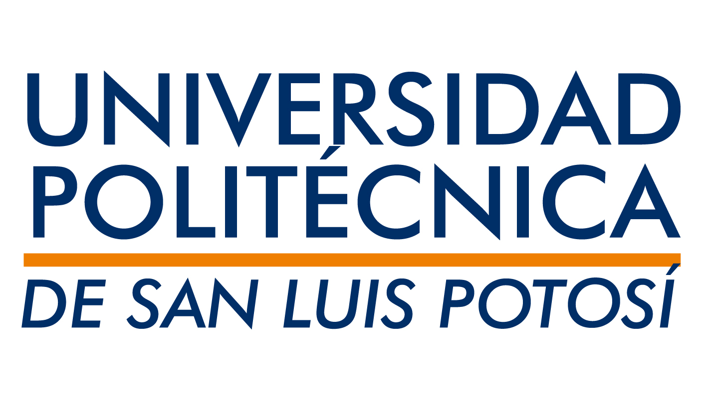

- UNIR México. (s.f.). Maestría en Desarrollo de Sitios Web. Recuperado el 19 de marzo de 2023, de https://mexico.unir.net/ingenieria/maestria-desarrollo-sitios-web/
- Universidad Abierta y a Distancia de México (UNADE). (s.f.). Maestría en Diseño y Programación Web. Recuperado el 19 de marzo de 2023, de https://unade.edu.mx/master-diseno-programacion-web/4987/
- Universidad de Medellín. (s.f.). Maestría en Ingeniería de Software. Recuperado el 19 de marzo de 2023, de https://ingenierias.udemedellin.edu.co/maestria-en-ingenieria-de-software/#gsc.tab=0
- Universidad de Guadalajara (UdeG). (s.f.). Maestría en Ingeniería de Software. Recuperado el 19 de marzo de 2023, de https://www.udg.mx/es/oferta-academica/maestria-en-ingenieria-de-software
- "The 10 Most In-Demand Programming Languages of 2021". Indeed. Retrieved 15 March 2023, from https://www.indeed.com/career-advice/career-development/most-in-demand-programming-languages
- "10 High-Paying Jobs You Can Get Without a College Degree". Glassdoor. Retrieved 15 March 2023, from https://www.glassdoor.com/blog/high-paying-jobs-without-degree/
- "What Does a Data Analyst Do?". CareerExplorer. Retrieved 15 March 2023, from https://www.careerexplorer.com/careers/data-analyst/
- Carr, N. (2016). What is Code?. Bloomberg Businessweek. https://www.bloomberg.com/graphics/2015-paul-ford-what-is-code/
- Eich, B. (2011). JavaScript at 16: The Story of a Growth Spurt. IEEE Spectrum. https://spectrum.ieee.org/computing/software/javascript-at-16-the-story-of-a-growth-spurt/
- Evans Data Corporation. (2021). Developer Population and Demographic Study 2021. https://www.evansdata.com/reports/viewRelease.php?reportID=49
- IEEE Computer Society. (2020). Top Programming Languages. IEEE Spectrum. https://spectrum.ieee.org/top-programming-languages/
- Institute of Electrical and Electronics Engineers. (2021). The IEEE GlobalSpec Engineering360 Media Solutions 2021 Marketing Planning Kit. https://insights.globalspec.com/article/12499/ieee-globalspec-engineering360-media-solutions-2021-marketing-planning-kit
- McIlroy, M. D. (2018). The development of the C language. Communications of the ACM, 61(4), 98-107. https://doi.org/10.1145/3191654
- Microsoft. (2021). Top programming languages in 2021. https://visualstudio.microsoft.com/vs/features/top-programming-languages/

Redes Sociales
|

|

|

|
PAGINA WEB |
Twitter |
Instagram |